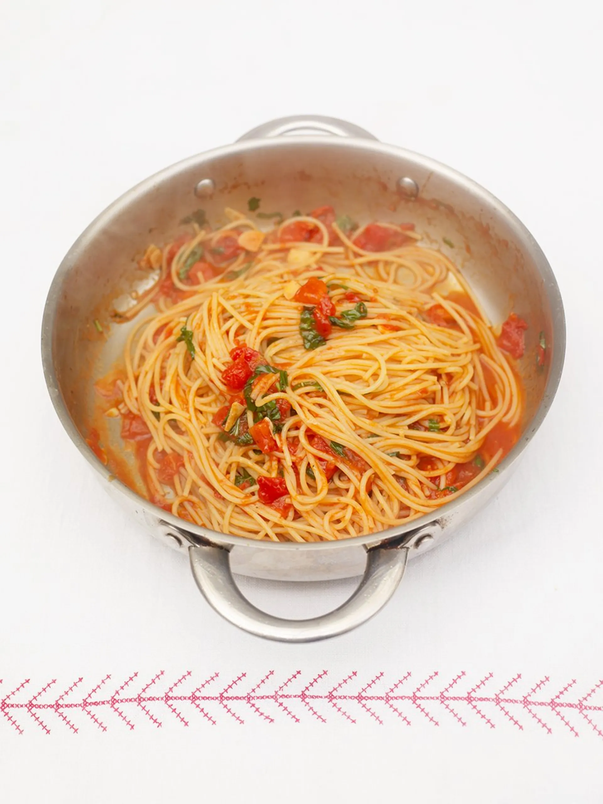

Tomato Spaghetti Recipe

Description
Classic tomato spaghetti, quick and easy to cook. Add other ingredients to transform into other delicious recipes.
Ingredients
- 2 cloves of garlic
- 1 fresh red chilli
- 1 bunch of fresh basil
- 300g dried spaghetto
- extra virgin olive oil
- 1 400g tin of plum tomatoes
- 80g parmesan cheese
Steps
- Peel the garlic and finely slice with the chilli (halve and deseed it first if you don’t want the sauce too hot).
- Pick the basil leaves off the stalks and put to one side. Finely chop the stalks.
- Cook the spaghetti in a large pan of boiling salted water according to packet instructions.
- Meanwhile, put a large saucepan on a medium heat and add 2 good lugs of oil. Add the garlic, chilli and basil stalks and give them a stir.
- When the garlic begins to brown slightly, add most of the basil leaves and scrunch in the tomatoes. Turn the heat up high and stir for 1 minute. Taste and season with sea salt and black pepper, if needed.
- Drain the spaghetti, reserving a mugful of cooking water, then transfer it to the pan of sauce and stir well. Add a splash of pasta cooking water to loosen, if needed, then taste and season to perfection.
- Roughly tear over the remaining basil leaves and finely grate over the Parmesan.